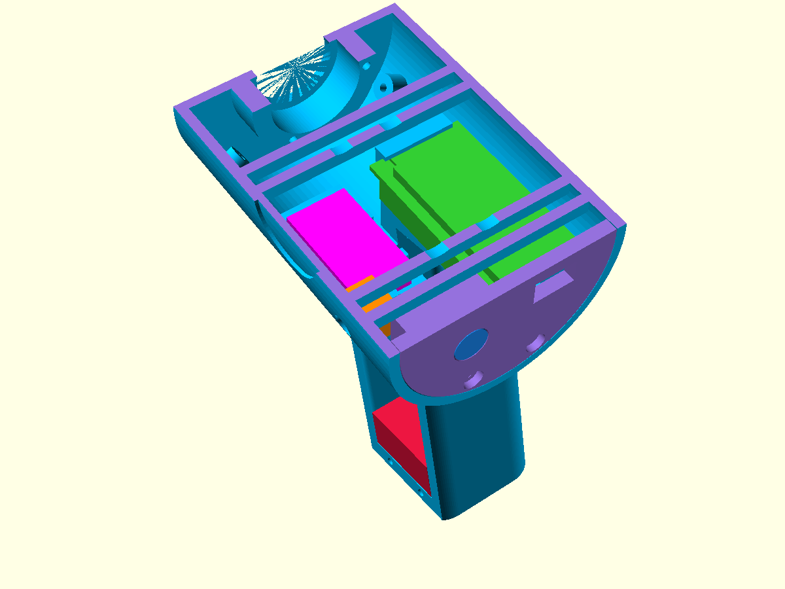
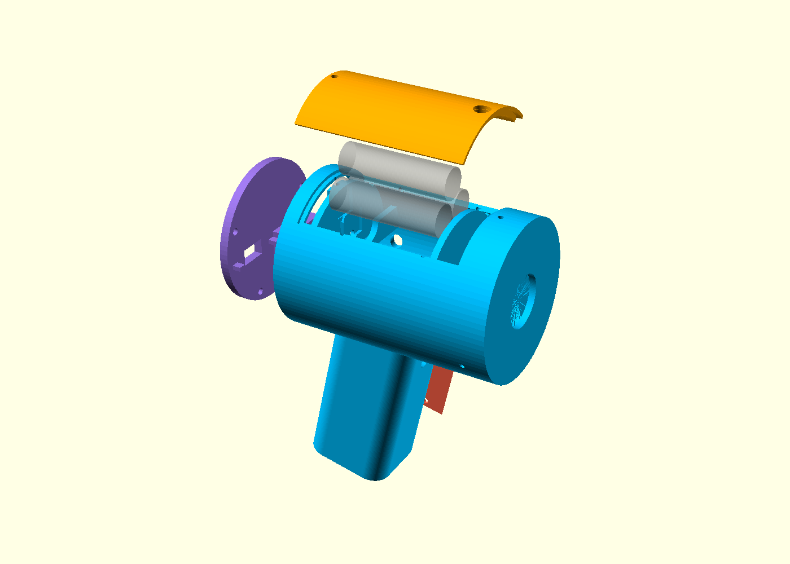
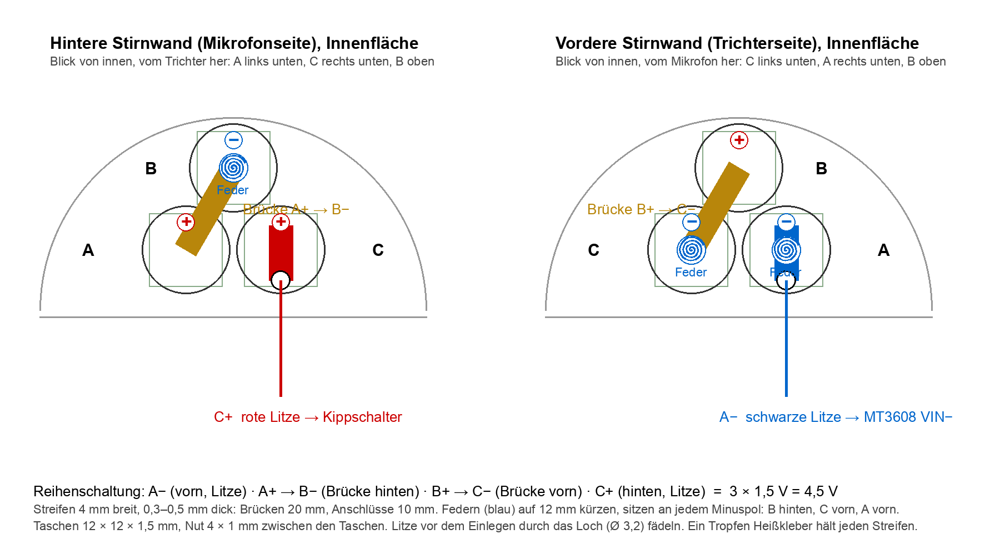
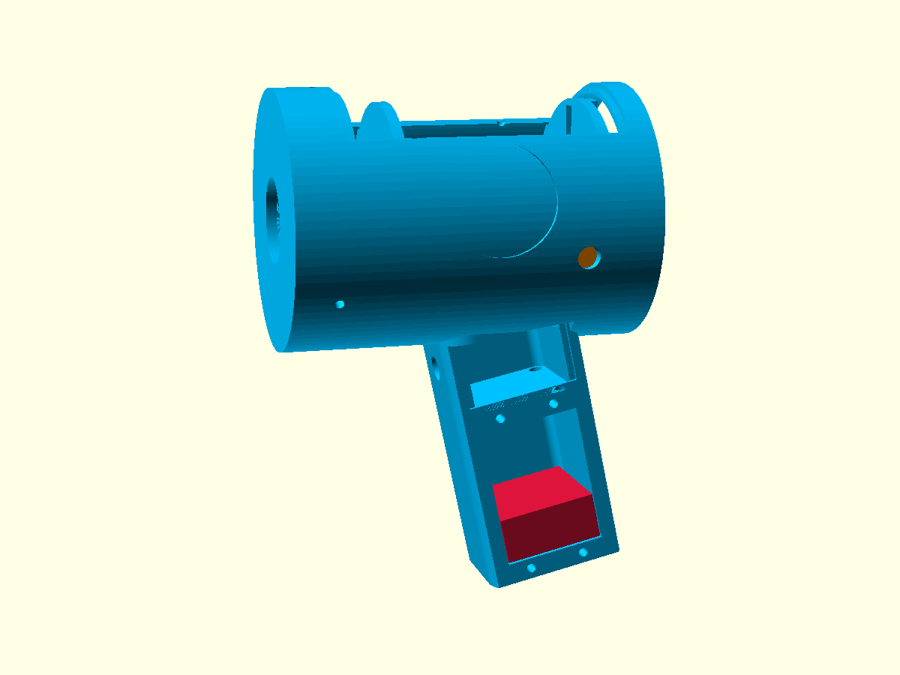
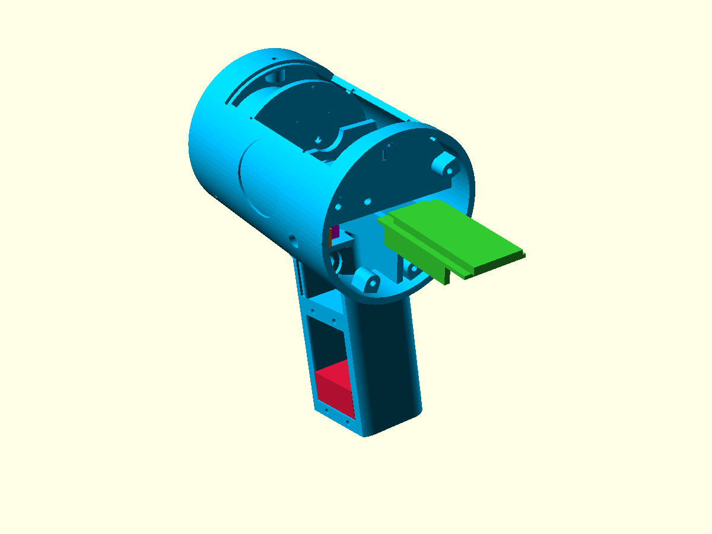
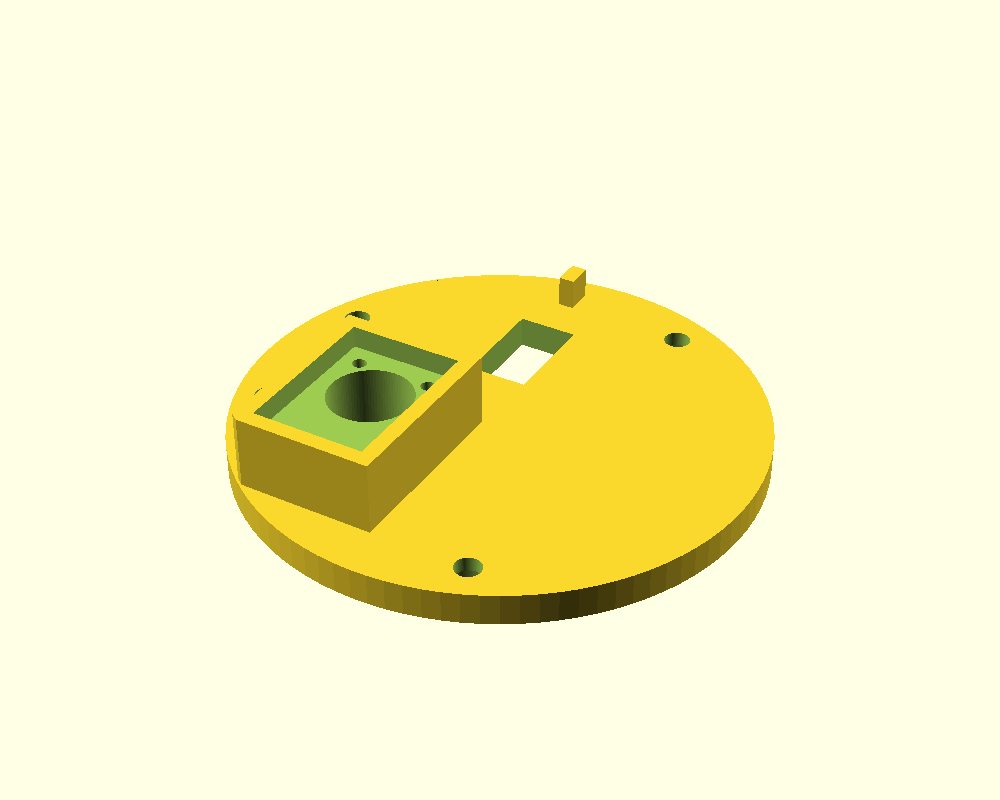
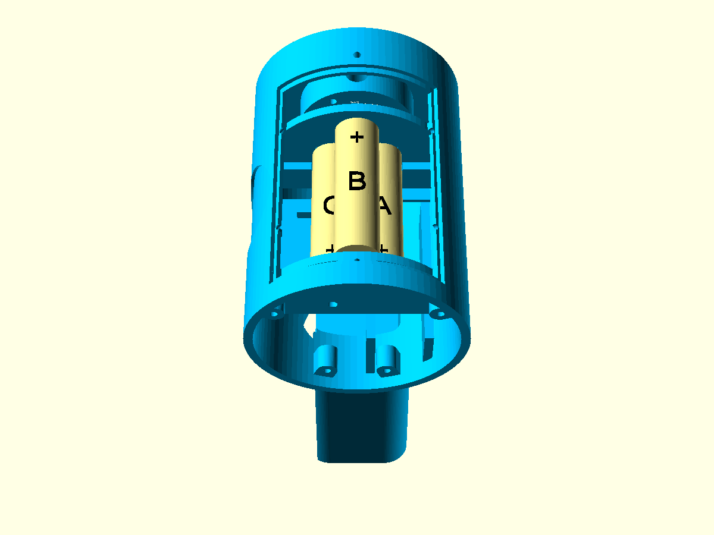
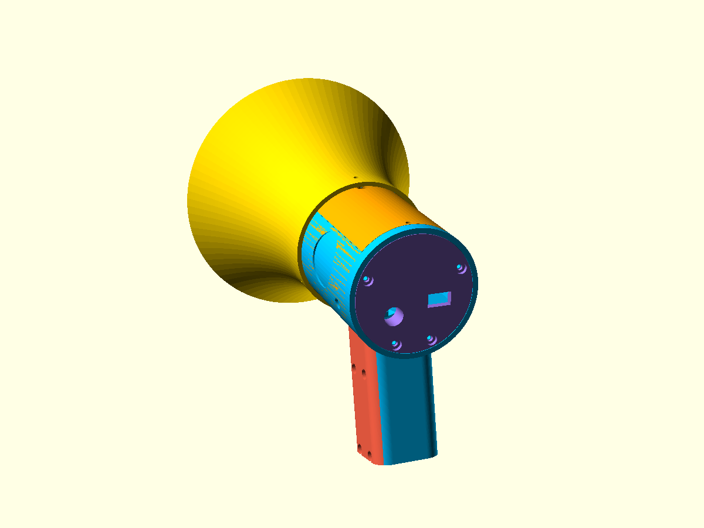

<title>Megafon Zusammenbau</title>
<meta name="claude:viewport-fit-sides" content="cover">
<link rel="stylesheet" href="https://fonts.googleapis.com/css2?family=Barlow+Condensed:wght@600;700&family=Barlow:ital,wght@0,400;0,600;1,400&family=IBM+Plex+Mono:wght@400;500&display=swap">
<style>
  /* Layout: Werkstatt-Anleitung, eine Spalte, nummerierte Schritte mit Bild und "Wo"-Kasten; Lesebreite 70 Zeichen, Tabellen scrollen selbst. */
  :root {
    --bg: #f5f3ee;        /* warmes Papiergrau */
    --paper: #fffdf8;
    --fg: #23262b;
    --muted: #5d6169;
    --line: #d9d5cc;
    --accent: #f2b705;    /* Warnweste-Gelb, Bob-der-Baumeister */
    --accent-ink: #1d1a0a;
    --where: #e8f0f7;     /* "Wo"-Kasten */
    --where-line: #9bb7d1;
    --warn: #fbe9d7;
    --warn-line: #e39a5a;
    --display: "Barlow Condensed", "Arial Narrow", sans-serif;
    --body: "Barlow", "Helvetica Neue", Arial, sans-serif;
    --mono: "IBM Plex Mono", Menlo, Consolas, monospace;
  }
  @media (prefers-color-scheme: dark) {
    :root:not([data-theme="light"]) {
      --bg: #1b1d21; --paper: #24272c; --fg: #ebe8e0; --muted: #a7a9ae; --line: #3b3f46;
      --accent: #f5c02c; --accent-ink: #1d1a0a; --where: #223040; --where-line: #4f6f8f;
      --warn: #3a2a1d; --warn-line: #b8723a; color-scheme: dark;
    }
  }
  :root[data-theme="dark"] {
    --bg: #1b1d21; --paper: #24272c; --fg: #ebe8e0; --muted: #a7a9ae; --line: #3b3f46;
    --accent: #f5c02c; --accent-ink: #1d1a0a; --where: #223040; --where-line: #4f6f8f;
    --warn: #3a2a1d; --warn-line: #b8723a; color-scheme: dark;
  }
  body { background: var(--bg); color: var(--fg); font-family: var(--body); font-size: 17px; line-height: 1.5;
         padding-left: max(16px, env(safe-area-inset-left, 0px)); padding-right: max(16px, env(safe-area-inset-right, 0px)); padding-block: 0 48px; }
  main { max-width: 880px; margin: 0 auto; }
  h1, h2, h3 { font-family: var(--display); line-height: 1.05; text-wrap: balance; margin: 0; }
  h1 { font-size: clamp(40px, 7vw, 64px); font-weight: 700; letter-spacing: 0.01em; }
  h2 { font-size: 30px; font-weight: 700; margin-top: 8px; }
  h3 { font-size: 22px; font-weight: 600; }
  p { margin: 0; max-width: 68ch; }
  .eyebrow { font-family: var(--mono); font-size: 12px; letter-spacing: 0.12em; text-transform: uppercase; color: var(--muted); }
  header.top { padding-block: 40px 24px; border-bottom: 4px solid var(--accent); display: grid; gap: 12px; }
  header.top p { font-size: 19px; }
  section { padding-block: 32px; border-bottom: 1px solid var(--line); display: grid; gap: 18px; }
  section:last-of-type { border-bottom: 0; }
  ul, ol { margin: 0; padding-left: 22px; }
  li { margin: 4px 0; }
  li::marker { color: var(--muted); }
  strong { font-weight: 600; }
  code, .pin { font-family: var(--mono); font-size: 0.9em; background: color-mix(in srgb, var(--fg) 8%, transparent); padding: 1px 5px; border-radius: 3px; }
  .cols { display: grid; grid-template-columns: repeat(auto-fit, minmax(260px, 1fr)); gap: 20px 32px; }
  .cols > div { min-width: 0; }
  .cols h3 { margin-bottom: 8px; }
  figure { margin: 0; display: grid; gap: 8px; }
  figure img { width: 100%; max-width: 100%; height: auto; border: 1px solid var(--line); background: #fffde8; }
  figcaption { font-size: 15px; color: var(--muted); max-width: 70ch; }
  .legend { display: flex; flex-wrap: wrap; gap: 6px 16px; font-size: 14px; color: var(--muted); }
  .legend span::before { content: ""; display: inline-block; width: 12px; height: 12px; border-radius: 2px; margin-right: 6px; vertical-align: -1px; background: var(--sw); }
  .step { display: grid; grid-template-columns: 64px 1fr; gap: 8px 16px; }
  .step .num { font-family: var(--display); font-weight: 700; font-size: 44px; line-height: 1; color: var(--accent-ink); background: var(--accent);
               width: 56px; height: 56px; display: grid; place-items: center; border-radius: 6px; }
  .step .body { min-width: 0; display: grid; gap: 14px; }
  .step h2 { margin-top: 6px; }
  .where { background: var(--where); border-left: 4px solid var(--where-line); padding: 10px 14px; display: grid; gap: 4px; max-width: 72ch; }
  .where .eyebrow { color: var(--where-line); }
  .warn { background: var(--warn); border-left: 4px solid var(--warn-line); padding: 10px 14px; max-width: 72ch; }
  .tablewrap { overflow-x: auto; max-width: 100%; }
  table { border-collapse: collapse; font-size: 15px; min-width: 560px; width: 100%; background: var(--paper); }
  th, td { text-align: left; padding: 7px 10px; border-bottom: 1px solid var(--line); vertical-align: top; }
  th { font-family: var(--display); font-size: 17px; font-weight: 600; letter-spacing: 0.02em; }
  td.n { font-family: var(--mono); font-variant-numeric: tabular-nums; white-space: nowrap; }
  .check { list-style: none; padding: 0; display: grid; gap: 6px; }
  .check li { display: grid; grid-template-columns: 22px 1fr; gap: 10px; align-items: start; }
  .check input { width: 18px; height: 18px; margin: 3px 0 0; accent-color: var(--accent); }
  a { color: inherit; text-decoration-color: var(--accent); text-decoration-thickness: 2px; }
  a:focus-visible, input:focus-visible { outline: 3px solid var(--accent); outline-offset: 2px; }
  @media (max-width: 480px) { .step { grid-template-columns: 1fr; } .step .num { width: 48px; height: 48px; font-size: 34px; } body { font-size: 16px; } }
</style>

<main>
<header class="top">
  <div class="eyebrow">Blablablubber Megafon · Stand 6 · 25.10.2026</div>
  <h1>Zusammenbau</h1>
  <p>Was wohin kommt und in welcher Reihenfolge. Der Körper ist ein Stück, deshalb zählt die Reihenfolge: erst die Teile, die nachher verdeckt sind, zuletzt Rückplatte, Griffschale, Zellen und Haube. Rechne mit einem Nachmittag.</p>
</header>

<section>
  <h2>Richtungen</h2>
  <p>Alle Angaben gelten, wie du das Megafon hältst: Griff in der Hand, Trichter zeigt von dir weg. <strong>Vorn</strong> ist der Trichter, <strong>hinten</strong> die Rückplatte mit dem Mikrofon. <strong>Links</strong> sind Griffschale, Kippschalter, Aufkleber und das Deck mit dem MT3608, <strong>rechts</strong> liegt der ESP32.</p>
  <figure>
    
    <figcaption>Lauf oberhalb der Zellen weggeschnitten, Blick von hinten links. Die Farben gelten auf allen Bildern:</figcaption>
    <div class="legend"><span style="--sw:#32cd32">ESP32 DevKitC</span><span style="--sw:#ff00ff">MT3608</span><span style="--sw:#dc143c">MAX98306</span><span style="--sw:#ff8c00">Kippschalter</span><span style="--sw:#1e90ff">Mikrofon</span><span style="--sw:#9370db">Rückplatte</span><span style="--sw:#00bfff">Körper</span></div>
  </figure>
</section>

<section>
  <h2>Das brauchst du</h2>
  <div class="cols">
    <div>
      <h3>Druckteile</h3>
      <ul>
        <li><strong>Körper</strong>: Lauf mit Griff, Batteriefach, Schienen und Deck</li>
        <li><strong>Haube</strong>: obere Schale, trägt den gelben Taster</li>
        <li><strong>Rückplatte</strong>: verschließt den Lauf, trägt das Mikrofon</li>
        <li><strong>Trichter</strong></li>
        <li><strong>Griffschale</strong>: linke Griffwand</li>
        <li><strong>Tastermuttern</strong>: drei Stück mit Gewinde M7 × 0,75 und unterschiedlichem Spiel (1, 2, 3 Kerben = eng, mittel, locker); die passende Stufe zweimal nachdrucken</li>
      </ul>
    </div>
    <div>
      <h3>Elektronik und wohin sie kommt</h3>
      <ul>
        <li>ESP32 DevKitC → Schienen rechts im Lauf, von hinten eingeschoben</li>
        <li>GY-MAX4466 Mikrofon → Kasten auf der Rückplatte</li>
        <li>MAX98306 Verstärker + Elko 470 µF → Kammer im Griff</li>
        <li>MT3608 Step-up → Deck links im Lauf</li>
        <li>Lautsprecher 28 mm → Tasche vorn im Lauf</li>
        <li>Kippschalter MTS-101 → linke Seitenwand, hinten</li>
        <li>Roter Taster → Griffhals (Abzug)</li>
        <li>Gelber Taster → vorn in der Haube</li>
        <li>3 × AA → Dreieck unter der Haube</li>
        <li>1 µF Kondensator → in die Leitung vom DAC zum Verstärker</li>
      </ul>
    </div>
    <div>
      <h3>Schrauben und Kleinteile</h3>
      <ul>
        <li>14 × M3 × 10: Rückplatte 4, Griffschale 4, Trichter 3, Lautsprecher 3 (mit Unterlegscheiben)</li>
        <li>1 × M3 × 12: Haube</li>
        <li>2 × M2 × 4 fürs Mikrofon, sonst Heißkleber</li>
        <li>Mutter des Kippschalters (liegt bei); die Taster kamen ohne, dafür die gedruckten Tastermuttern mit Gewinde M7 × 0,75</li>
        <li>Kontakte: 2 Brückenstreifen 20 mm, 2 Anschlussstreifen 10 mm, 3 Federn auf 12 mm gekürzt</li>
        <li>Litze 0,25 mm², etwa 2,5 m in Rot, Schwarz und drei Signalfarben; Schrumpfschlauch</li>
        <li>2-poliger Stecker (Dupont oder JST) für den Taster in der Haube</li>
      </ul>
    </div>
    <div>
      <h3>Werkzeug</h3>
      <ul>
        <li>Lötkolben, Seitenschneider, Abisolierzange</li>
        <li>Kreuzschlitz PH1, kleiner Schlitzschraubendreher für die Trimmer</li>
        <li>Multimeter</li>
        <li>Heißklebepistole</li>
        <li>Bohrer 2,5 mm und 3,2 mm zum Nachbohren, Schraubenschlüssel 10 mm für die Tastermuttern</li>
      </ul>
    </div>
  </div>
  <figure>
    
    <figcaption>Die fünf Druckteile: Körper (blau), Haube (orange), Rückplatte (violett), Griffschale (rot), Trichter nicht abgebildet.</figcaption>
  </figure>
</section>

<section class="step">
  <div class="num">1</div>
  <div class="body">
    <h2>Druckteile vorbereiten</h2>
    <p>Alle Kernlöcher für M3 mit 2,5 mm nachbohren (Rückplatten-Pfosten, Griffplatten, Trichterkragen, Lautsprecherring, Haubenblock), die Durchgangslöcher in Rückplatte, Griffschale und Trichter mit 3,2 mm. Dann trocken probieren: Haube aufklicken und wieder abziehen, Rückplatte in das Laufende legen (sie sitzt bündig auf vier Pfosten), Trichter aufstecken. Was klemmt, wird jetzt mit der Feile gerichtet, nicht später mit Elektronik drin.</p>
    <div class="where"><div class="eyebrow">Wo</div><p>Haube: 54 mm breite Öffnung oben im Lauf, Rastnasen auf beiden Seiten, Schraubloch hinten. Rückplatte: Pfosten links und rechts oben, zwei unten. Trichter: drei Löcher im Kragen passen auf die drei Löcher 12 mm hinter der Laufvorderkante.</p></div>
  </div>
</section>

<section class="step">
  <div class="num">2</div>
  <div class="body">
    <h2>Batteriekontakte einsetzen</h2>
    <p>Die drei Zellen liegen in Reihe: A und C unten, B oben im Tal. Jede Stirnwand hat drei Taschen 12 × 12 mm. In die Taschen kommen die Streifen, an jeden Minuspol eine Feder (hinten bei B, vorn bei A und C). Die beiden Anschlussstreifen bekommen vor dem Einlegen ihre Litze, die durch das Loch Ø 3,2 neben der Tasche nach außen geführt wird. Ein Tropfen Heißkleber hält jeden Streifen.</p>
    <div class="where"><div class="eyebrow">Wo</div><p>Hintere Stirnwand: Brücke A+ → B− mit Feder an B, Anschluss C+ mit <strong>roter Litze</strong>, die hinter der Wand nach unten in den hinteren Raum fällt (Ziel: Kippschalter). Vordere Stirnwand: Brücke B+ → C− mit Feder an C, Anschluss A− mit Feder und <strong>schwarzer Litze</strong>, die vor der Wand nach unten läuft (Ziel: MT3608 IN−).</p></div>
    <figure>
      
      <figcaption>Beide Stirnwände von innen gesehen. Die Buchstaben gelten auch für das nächste Bild.</figcaption>
    </figure>
  </div>
</section>

<section class="step">
  <div class="num">3</div>
  <div class="body">
    <h2>Lautsprecher und Kippschalter</h2>
    <p>Lautsprecher von innen in die Tasche vorn drücken (Membran nach vorn zur Öffnung Ø 24). Drei M3 × 10 mit Unterlegscheiben in die Löcher auf dem Lochkreis 33 mm, die Scheiben klemmen den Rand. Die Litzen des Lautsprechers auf 18 cm verlängern, sie laufen später unter dem ESP32 durch zum Griff. Kippschalter: zwei Litzen anlöten (8 cm und 8 cm), dann bei abgenommener Haube von oben in den Lauf greifen und das Gewinde von innen durch das Loch in der linken Wand stecken, Mutter außen anziehen. Hebel nach vorn = an.</p>
    <div class="where"><div class="eyebrow">Wo</div><p>Lautsprechertasche: Ring hinter der Vorderwand, 9 mm tief. Kippschalterloch: linke Seitenwand, 21 mm vor der Rückplatte, 8 mm unter der Laufmitte; der Schalterkörper liegt unter den Rippen des Batteriefachs.</p></div>
  </div>
</section>

<section class="step">
  <div class="num">4</div>
  <div class="body">
    <h2>Griff: Abzug und Verstärker</h2>
    <p>Roter Taster von vorn in das Loch im Griffhals stecken. Die gedruckte Tastermutter erst auf dem Tisch probieren: die Stufe nehmen, die sich ohne Wackeln von Hand aufdrehen lässt. Dann innen durch das obere Fenster aufschrauben, bis sie in der Senkung sitzt. Die zwei Litzen (10 cm) laufen durch den Hals nach oben in den Lauf. Verstärker auf dem Tisch komplett verdrahten: VDD und GND je 16 cm (zum MT3608), SD 16 cm (zum ESP32), L+ über den 1-µF-Kondensator 16 cm (zum ESP32), L− kurz an GND, Lautsprecherausgang LOUT+/LOUT− (die Litzen vom Lautsprecher kommen hier an). Elko 470 µF direkt an VDD/GND löten, Minus am weißen Streifen. Dann den Verstärker durch das untere Fenster in die Kammer legen, Stiftleiste zur offenen Seite, und alle Litzen durch die zwei Ø-4-Löcher in der Zwischenplatte nach oben in den Hals ziehen.</p>
    <div class="where"><div class="eyebrow">Wo</div><p>Abzug: Loch Ø 7,3 vorn im Griffhals, 16 mm unter dem Lauf, innen Senkung Ø 13 für die Mutter. Verstärkerkammer: 30 × 32 × 40 mm unter der 6-mm-Platte, Zugang durch das untere Fenster der linken Griffwand. Die Griffschale bleibt bis zum Schluss ab.</p></div>
    <figure>
      
      <figcaption>Linke Seite ohne Griffschale: oben das Fenster zur Abzugsmutter, unten die Kammer mit dem Verstärker (rot). Der orange Punkt ist das Kippschalterloch.</figcaption>
    </figure>
  </div>
</section>

<section class="step">
  <div class="num">5</div>
  <div class="body">
    <h2>MT3608 trimmen und einsetzen</h2>
    <p>Erst trimmen, dann einbauen: drei Zellen oder ein Netzteil (3 bis 4,5 V) an IN+ und IN−, Multimeter an OUT+ und OUT−, <strong>ohne Last</strong> am Trimmer drehen, bis 5,0 V anliegen. Ab Werk steht er oft bei 10 V oder mehr, das würde den ESP32 töten. Danach vier Litzen anlöten: IN+ 8 cm (vom Kippschalter), IN− 10 cm (schwarze Litze A− von vorn), OUT+ zweimal (8 cm zum ESP32 VIN, 16 cm zum Verstärker VDD), OUT− zweimal (8 cm zum ESP32 GND, 16 cm zum Verstärker GND). Platine von oben in die Kantenklammern auf dem linken Deck drücken, bis die Nasen über den Längskanten einrasten.</p>
    <div class="where"><div class="eyebrow">Wo</div><p>Deck links, 18 mm unter der Laufmitte, zwischen den beiden Rippen des Batteriefachs. Trimmer nach hinten links, dann ist er neben Zelle C auch mit Zellen erreichbar. Die Litzen zum Griff gehen am Deckrand vorbei nach unten in den Kabelkanal.</p></div>
  </div>
</section>

<section class="step">
  <div class="num">6</div>
  <div class="body">
    <h2>ESP32 verdrahten und einschieben</h2>
    <p>Die Stiftleisten zeigen nach unten, die Litzen kommen an die <strong>Stiftspitzen</strong>. Neun Stifte sind belegt, die Tabelle unten sagt welche. Verlötete Platine mit der Antenne voran von hinten in den Lauf schieben: die beiden Schienen tragen die Platine, die Stiftreihen hängen außen daneben und führen seitlich. Schieben, bis die Vorderkante am Anschlag sitzt und unter der Lippe liegt; der USB-C-Stecker steht dann einen halben Millimeter vor der Rückplatte. Wenn eine Stiftreihe an einer Schiene schleift, Schiene mit der Feile um einen halben Millimeter schmaler machen.</p>
    <div class="where"><div class="eyebrow">Wo</div><p>Rechts im Lauf, Platine 8 mm unter der Laufmitte. Innere Stiftreihe (Beschriftung VIN … EN) zum Kabelkanal, äußere Reihe (3V3 … D23) an der rechten Laufwand. Litzen der inneren Reihe fallen in den Kanal zwischen ESP32 und Deck und laufen von dort nach unten in den Hals. Litzen der äußeren Reihe laufen an der Wand nach hinten in den Raum vor der Rückplatte; von dort geht es zum Mikrofon oder unter der Platine durch nach vorn.</p></div>
    <figure>
      
      <figcaption>Rückplatte ab, ESP32 halb eingeschoben. Die Antenne zeigt nach vorn, USB-C bleibt hinten.</figcaption>
    </figure>
    <div class="tablewrap">
      <table>
        <thead><tr><th>Reihe</th><th>Stift, von hinten (USB) gezählt</th><th>Beschriftung</th><th>Litze nach</th></tr></thead>
        <tbody>
          <tr><td>innen (Kanal)</td><td class="n">1</td><td><span class="pin">VIN</span></td><td>MT3608 OUT+ (5 V), rot</td></tr>
          <tr><td>innen</td><td class="n">2</td><td><span class="pin">GND</span></td><td>MT3608 OUT− und Abzug, schwarz</td></tr>
          <tr><td>innen</td><td class="n">6</td><td><span class="pin">D27</span></td><td>Abzug (roter Taster)</td></tr>
          <tr><td>innen</td><td class="n">8</td><td><span class="pin">D25</span></td><td>1 µF → Verstärker L+</td></tr>
          <tr><td>innen</td><td class="n">12</td><td><span class="pin">D34</span></td><td>Mikrofon OUT</td></tr>
          <tr><td>außen (Wand)</td><td class="n">1</td><td><span class="pin">3V3</span></td><td>Mikrofon VCC</td></tr>
          <tr><td>außen</td><td class="n">2</td><td><span class="pin">GND</span></td><td>Mikrofon GND und gelber Taster, schwarz</td></tr>
          <tr><td>außen</td><td class="n">5</td><td><span class="pin">D4</span></td><td>Verstärker SD</td></tr>
          <tr><td>außen</td><td class="n">7</td><td><span class="pin">TX2</span> (GPIO 17)</td><td>gelber Taster in der Haube</td></tr>
        </tbody>
      </table>
    </div>
  </div>
</section>

<section class="step">
  <div class="num">7</div>
  <div class="body">
    <h2>Mikrofon und Rückplatte</h2>
    <p>Drei Litzen (10 cm) an VCC, GND und OUT des Mikrofonmoduls. Platine mit der Kapsel voran in den Kasten auf der Innenseite der Rückplatte legen, die Kapsel rutscht durch das Loch und schließt außen bündig ab. Zwei M2 × 4 von innen durch die Platinenlöcher, oder zwei Tropfen Heißkleber in die Ecken. Der Gain-Trimmer zeigt nach innen und bleibt erreichbar, solange die Platte ab ist. Jetzt alle Verbindungen im hinteren Raum löten (Mikrofon an 3V3, GND, D34; rote Litze von C+ an den Kippschalter; Kippschalter an MT3608 IN+), Schrumpfschlauch drüber. Platte noch nicht festschrauben, erst testen.</p>
    <div class="where"><div class="eyebrow">Wo</div><p>Mikrofonkasten in Halterichtung links unten; hältst du die Platte mit der Innenseite zu dir, liegt er rechts unten. Daneben der USB-C-Schlitz (13 × 7,5 mm, schlanker Stecker). Die zwei Nasen beiderseits des Schlitzes legen sich beim Aufsetzen über die hinteren Ecken des ESP32.</p></div>
    <figure>
      
      <figcaption>Rückplatte von innen (Druckseite unten): Mikrofonkasten, USB-C-Schlitz, eine der zwei Haltenasen, vier Löcher für M3 × 10.</figcaption>
    </figure>
  </div>
</section>

<section class="step">
  <div class="num">8</div>
  <div class="body">
    <h2>Gelber Taster in die Haube</h2>
    <p>Taster von außen in das Loch vorn in der Haube, gedruckte Tastermutter innen aufschrauben. Zwei Litzen (22 cm) nach TX2 und GND der äußeren Reihe. Dazwischen gehört ein 2-poliger Stecker, damit die Haube zum Zellenwechsel abgenommen werden kann, ohne an den Litzen zu ziehen. Der Stecker liegt im Lauf neben Zelle C.</p>
    <div class="where"><div class="eyebrow">Wo</div><p>Loch Ø 7,3 in der Haube, 6 mm hinter ihrer Vorderkante, mittig. Die Litzen laufen vorn an der Stirnwand des Batteriefachs nach unten in den Kabelkanal.</p></div>
  </div>
</section>

<section class="step">
  <div class="num">9</div>
  <div class="body">
    <h2>Erster Test, dann zuschrauben</h2>
    <ul class="check">
      <li><input type="checkbox" id="c1"><label for="c1">Ohne Zellen: USB-C-Kabel durch den Schlitz der lose aufgelegten Rückplatte, Kippschalter aus, Firmware flashen (<code>pio run -t upload</code>), seriellen Monitor öffnen.</label></li>
      <li><input type="checkbox" id="c2"><label for="c2">Zellen einlegen: A und C unten mit dem Pluspol nach hinten, B oben mit dem Pluspol nach vorn. Multimeter an rote und schwarze Litze: etwa 4,5 V.</label></li>
      <li><input type="checkbox" id="c3"><label for="c3">USB ab, Kippschalter an: Jingle aus dem Lautsprecher, am MT3608 OUT 5,0 V. Abzug halten und sprechen, gelber Taster wechselt die Stimme.</label></li>
      <li><input type="checkbox" id="c4"><label for="c4">Gain am Mikrofon so einstellen, dass normales Sprechen in 10 cm Abstand nicht kratzt.</label></li>
      <li><input type="checkbox" id="c5"><label for="c5">Rückplatte mit 4 × M3 × 10 (Nasen über die ESP32-Ecken), Griffschale mit 4 × M3 × 10, Haube aufklicken und hinten mit M3 × 12 sichern, Trichter aufstecken und mit 3 × M3 × 10 verschrauben.</label></li>
    </ul>
    <figure>
      
      <figcaption>Haube ab, Blick von hinten: A rechts und C links mit dem Plus nach hinten, B oben mit dem Plus nach vorn.</figcaption>
    </figure>
    <figure>
      
      <figcaption>Fertig von hinten: Mikrofon links unten, USB-C-Schlitz, vier Schrauben.</figcaption>
    </figure>
  </div>
</section>

<section>
  <h2>Kabelliste</h2>
  <p>Längen mit Reserve, lieber einen Zentimeter zu viel. Masse ist ein Sternpunkt am MT3608: IN− und OUT− sind auf dem Modul verbunden.</p>
  <div class="tablewrap">
    <table>
      <thead><tr><th>Von</th><th>Nach</th><th>Farbe</th><th>Länge</th><th>Weg</th></tr></thead>
      <tbody>
        <tr><td>C+ (hintere Stirnwand)</td><td>Kippschalter</td><td>rot</td><td class="n">8 cm</td><td>hinter der Stirnwand nach unten, unter der Rippe zum Schalter</td></tr>
        <tr><td>Kippschalter</td><td>MT3608 IN+</td><td>rot</td><td class="n">8 cm</td><td>unter der Rippe nach vorn aufs Deck</td></tr>
        <tr><td>A− (vordere Stirnwand)</td><td>MT3608 IN−</td><td>schwarz</td><td class="n">10 cm</td><td>vor der Stirnwand nach unten, zurück aufs Deck</td></tr>
        <tr><td>MT3608 OUT+</td><td>ESP32 VIN</td><td>rot</td><td class="n">8 cm</td><td>Kabelkanal</td></tr>
        <tr><td>MT3608 OUT−</td><td>ESP32 GND (innen 2)</td><td>schwarz</td><td class="n">8 cm</td><td>Kabelkanal</td></tr>
        <tr><td>MT3608 OUT+ / OUT−</td><td>Verstärker VDD / GND, Elko</td><td>rot / schwarz</td><td class="n">16 cm</td><td>Kabelkanal, Hals, Platte</td></tr>
        <tr><td>ESP32 D25</td><td>1 µF → Verstärker L+</td><td>gelb</td><td class="n">16 cm</td><td>Kabelkanal, Hals</td></tr>
        <tr><td>ESP32 D4</td><td>Verstärker SD</td><td>grün</td><td class="n">16 cm</td><td>hinten unter der Platine durch, Hals</td></tr>
        <tr><td>Verstärker LOUT+ / LOUT−</td><td>Lautsprecher</td><td>rot / schwarz</td><td class="n">18 cm</td><td>Hals, unter dem ESP32 durch nach vorn</td></tr>
        <tr><td>ESP32 D27 + GND (innen)</td><td>Abzug</td><td>weiß / schwarz</td><td class="n">10 cm</td><td>Kabelkanal in den Hals</td></tr>
        <tr><td>ESP32 TX2 + GND (außen)</td><td>gelber Taster, mit Stecker</td><td>weiß / schwarz</td><td class="n">22 cm</td><td>hinten unter der Platine durch, vorn an der Stirnwand hoch</td></tr>
        <tr><td>ESP32 3V3 / GND (außen) / D34</td><td>Mikrofon VCC / GND / OUT</td><td>rot / schwarz / blau</td><td class="n">10 cm</td><td>an der rechten Wand nach hinten</td></tr>
      </tbody>
    </table>
  </div>
  <div class="warn">Vor dem ersten Einschalten mit Zellen: MT3608 steht auf 5,0 V, Elko-Minus am GND, rote Litze von C+ nicht an GND. Die Stiftspitzen des ESP32 hängen frei unter der Platine, kein abstehendes Lötzinn Richtung Schienen.</div>
</section>

<section>
  <h2>Später</h2>
  <p><strong>Zellenwechsel:</strong> M3 × 12 hinten in der Haube lösen, Haube abziehen, Stecker des gelben Tasters trennen, Zellen tauschen. Trichter, Rückplatte und Griffschale bleiben dran. <strong>Firmware:</strong> Kippschalter aus, USB-C durch den Schlitz. <strong>Verdrahtungsplan</strong> mit Fotos: <a href="https://claude.ai/artifact/PFHdCtN2BqmfovLx1xorbH">Verdrahtung</a>; Maße und Varianten stehen in <code>3d/megafon.scad</code>.</p>
</section>
</main>
